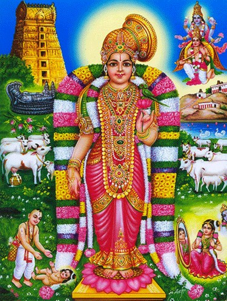

Andal is the only female azhvar among the 12 revered azhvars[cite: 2]. She’s the amsam of Bhoodevi also known as soodikodutha sudarkodi[cite: 2]. She wrote Thiruppavai and natchiar thirumozhi[cite: 2]. She was drawn to Thiruarangan like a magnet[cite: 2]. When the time came, she travelled from Srivilliputtur to Srirangangam, She went near the Lord, climbed on the serpent bed and became one with Him[cite: 2].
